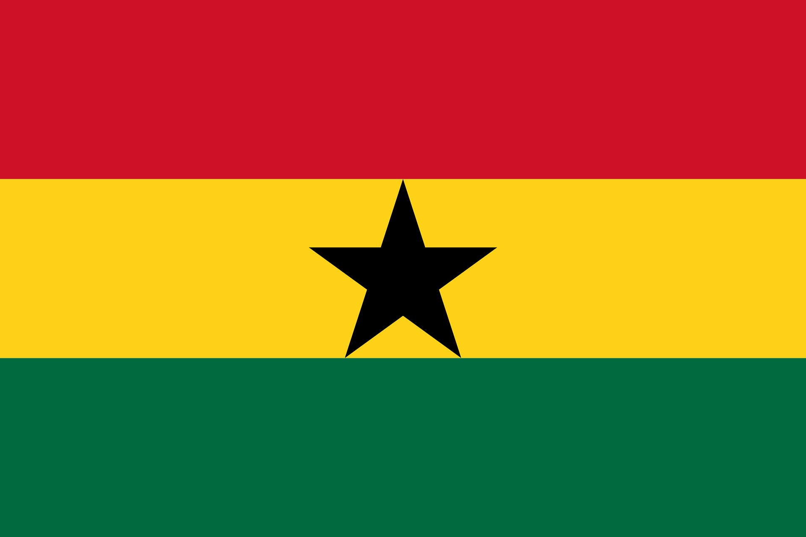

Samuel Motey Howard
My name is Samuel Motey Howard. I was born in Ghana. I currently live with my family in Winneba, which is located in the Central Region of Ghana, and I am schooling at BYU-Idaho through BYU-Pathway. I previously attended the University of Cape Coast, where I completed a degree in Computer Science. However, I wanted to learn more and earn a degree from a foreign institution. So far, I am learning a lot.

Winneba, Ghana

Ghana is the 81st largest country in the world by land area and is home to about 0.43% of the world's population.Ghana population is equivalent to 0.43% of the total world population. It is one of the most politically stable and peaceful democracies in Africa, and it is currently the largest producer of gold on the African continent. It is located on the west coast of Africa